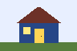

Baby's First Web Class - Microsoft Internet Explorer
Baby's First Web Class - Microsoft Internet Explorer
Lesson 5: Links and images
Goal: Link two pages, jump to a section and add an image with alternative text.
A link uses the <a> tag. Its href attribute says where the link goes. The words between the tags are what a visitor clicks.
Link to another local page
Create an about.html file beside your first page. Add a heading and paragraph to it, then put this on your first page:
<a href="about.html">About this site</a>On this website, Visit the glossary is a working example of a local link.
Link to another website
<a href="https://developer.mozilla.org/en-US/docs/Web/HTML">
Read the MDN HTML guide
</a>Try it: Read the MDN HTML guide. Outside websites need an internet connection.
Jump down the same page
An ID names one element on a page. Use each ID only once per page. A link beginning with # goes to that ID.
<a href="#image-example">Go to the image example</a>
<h3 id="image-example">Image example</h3>Image example
Put your image in an images folder. The src attribute gives its path. The alt attribute describes useful information for someone who cannot see it.
<img src="images/little-house.png"
alt="A small blue house with a yellow door">
A small PNG image. This file is included in the project.
PNG works well for simple drawings with sharp edges. JPEG usually suits photographs. Use an image close to the size you need instead of a huge file made tiny with CSS.
A purely decorative image can use alt="". Give meaningful images a short description; do not leave out the attribute.
Try it
Make a link from your first page to your second page and back again. Open each link. Then add an image and check its folder and filename.
Common mistake
photo.PNG and photo.png may be different files on a web server. Copy the exact filename, including capital letters.
Next, give the page some space and try a small float layout.